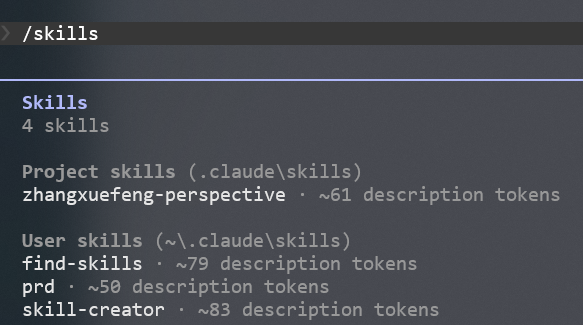

claudecode
ClaudeCode
避免权限请求
使用ClaudeCode时，会发现它总是请求各种命令的权限，非常烦人。可以通过以下方式让他获取所有工具的权限
1 | claude --allow-dangerously-skip-permissions |
skill
定义
skill本质上是给AI可复用的功能插件，类似于我们写代码时的一些第三方库（比如OpenCV让C++直接具有了图像处理的能力，而不必手动从底层实现这个功能）。它本质上是把“prompt + 规则/最佳实践 + 脚本 + RAG这样一整个工作流打包给AI，这样就不必每次都重新教给他。此外，通过给一些脚本，让AI从只会聊天变得能操作你的电脑，靠拢真正的Agent
1 | skill: |
system prompt、RAG、workdflow我觉得本质上都是一些文字，有什么区别呢？
- system prompt：必须遵守啥
- 必须符合 Linux kernel coding style
- 使用 devm_* API
- 错误处理必须完整
- RAG：参考啥
- 公司代码模板
- 寄存器配置说明
- workflow：该能力的工作流程
- 确定的步骤：解析需求 -> 查 RAG -> 生成代码 -> 调用 tool -> …
为什么不能只用prompt或者RAG呢？
- 如果全写进prompt里，会消耗很多token，并且不好维护，新规范难加进去
分类
目前的skill有以下几类：
- coding类：通过给一些预置的非常好的prompt和规则，改进AI的代码风格、强制进行code review等操作，增强AI的写代码的能力
- Automation类：这类skill一般还会提供一些脚本，从而让他能操作电脑自动化地完成一些事情，比如浏览网页、PDF阅读、环境部署、运维等等
- 私有知识类：要让AI学习到一些规范或者预训练时没看过的小众知识（比如公司内部数据）第一时间可能想到的是RAG，但RAG只是让AI外挂一些记忆，并不能给AI操作的能力，skill在RAG的基础上提供一些工具，从而让AI不仅知道如何做，而直接可以动手帮你做
安装
目前skill已形成生态，ClaudeCode的skill安装有3种方式，类似一种AI的包管理系统
方式一：
- 通过
/plugin直接从插件市场安装（官方方法）
方式二：
- 手动把skill文件放到
~/.claude/skills下（全局安装）或者放到项目的.claude/skills下（项目安装）
方式三：
- 使用
npx种的skills这个CLI工具进行安装。比如：
1 | npx skills add alchaincyf/zhangxuefeng-skill --agent claude-code |
后边一定要加
--agent claude-code不然ClaudeCode没法自动识别
该方法本质上是自动从git下载skill文件，然后将其放到.claude/skills种
验证是否安装成功
使用/skills命令可以显示已安装的skills以及其安装位置

常见skill总结
MCP
MCP（Model Context Protocol）本质上和HTTP、RCP类似，都是一种协议。MCP主要用于MCP Client（AI）和MCP Server（外部工具适配层）之间通信，从而让AI能够以一种标准的方式调用外部工具（比如git、word…）
为什么要用MCP
其实让AI调用外部工具确实不需要这样一个协议，可以为某个工具写一些固定的shell脚本就行了。但是这样不统一，并且很难复用。所以设计者就提出了MCP这个协议，把AI调用外部工具以及外部工具如何暴露接口给AI都进行了标准化 + 可插拔化 + 可扩展化
MCP Server
MCP Server可以理解为一个包装层，它给现有的应用进行封装，让这些工具具备MCP通信的能力，从而可以被AI调用。如果没有这层的话，我们如果想让这些工具能够被MCP Client调用，就得在这些工具内部实现MCP协议，那太麻烦了，每个工具比如git什么的都得从源码改动，这也不现实，所以设计者就引入了这个抽象层
MCP Server到底是daemon进程吗，还是只是一些代码？
MCP Server是一类遵循 MCP 协议的工具程序集合，他不和Web Server一样必须是个守护进程，它可以是：
- daemon
- CLI
- script
- remote service
安装
要让AI具有调用外部应用的能力，一般需要安装的是MCP Server
下载工具
MCP Server的代码通常是js写的，所以通npm或者npx包管理工具下载，也可以直接去github下载源码
1 | npx @modelcontextprotocol/server-filesystem /your/path |
client配置
下载完代码后，还需要告诉AI这些MCP Server如何运行，ClaudeCode需要写个MCP Config文件（类似VSCode的配置文件）ClaudeCode启动时会读取这个配置文件，预启动MCP Server，在AI进行工具调用时，直接和这些MCP Server通信从而调用
1 | { |
使用场景
git操作、连接数据库、接入公司内部系统、控制浏览器